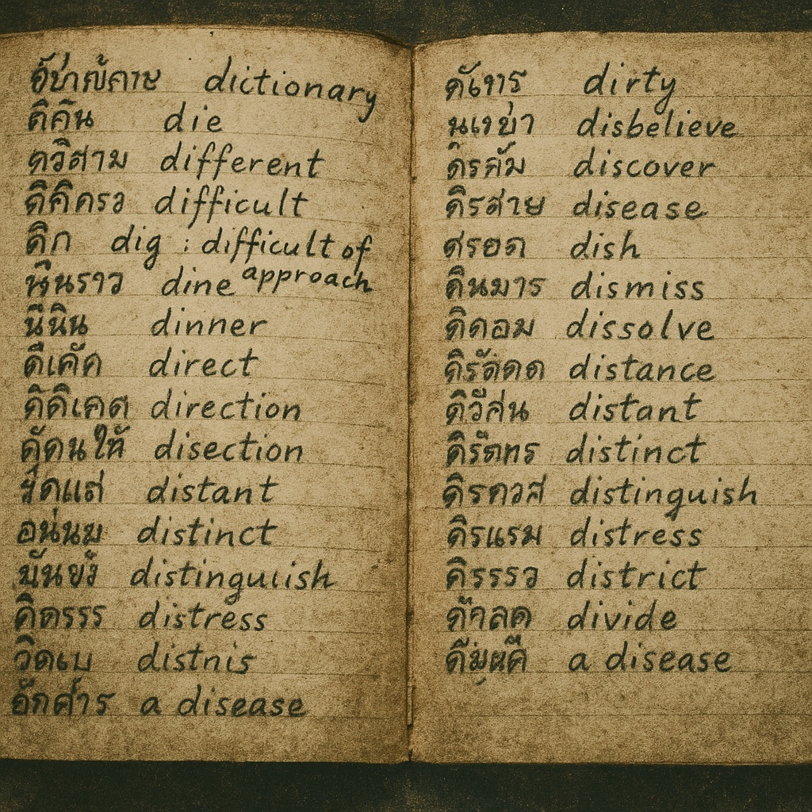

6 The Dictionary Project Begins
6.1 “How Does One Write a Dictionary in Prison?”
Faced with a life sentence and his students’ need for English translation, So Sethaputra embarked on what he called his “Life’s Work” - creating Thailand’s first comprehensive English-Thai dictionary written by a Thai for Thai students.

The question that kept So Sethaputra awake during his first weeks in Bang Kwang prison was deceptively simple yet overwhelmingly complex: “How does one even begin to write a dictionary in prison?” The more he contemplated the practical challenges involved, the more impossible the task seemed. Yet it was precisely this impossibility that made the project so compelling. If he could succeed in creating a comprehensive English-Thai dictionary under such circumstances, he would demonstrate that intellectual achievement could transcend any form of political persecution.
The inspiration for the dictionary had emerged from his teaching experience in Ward Six (as described in Chapter 5), but the decision to undertake such an ambitious project required a fundamental reorientation of how So understood his imprisonment. Rather than viewing his life sentence as the end of his productive career, he began to see it as an unprecedented opportunity to focus entirely on scholarly work without the distractions and obligations that had previously limited his intellectual pursuits.
At thirty years old, So possessed the intellectual vigor and psychological resilience necessary for such a demanding undertaking. His years as Royal Spokesman had given him extensive experience with both English and Thai, while his background in journalism had taught him the importance of clear, accessible prose. Most crucially, his teaching experience had shown him exactly what kind of dictionary Thai students needed: not merely a collection of word equivalents, but a comprehensive guide to English language and culture written from a Thai perspective.
6.2 The Vision of a New Kind of Dictionary
So’s conception of his dictionary project was revolutionary in its scope and approach. Existing English-Thai dictionaries were typically crude compilations produced by European scholars or missionaries who lacked deep understanding of Thai culture and learning styles. These works treated language as a mechanical process of word substitution, ignoring the cultural contexts that gave words their real meaning and significance.
So envisioned something entirely different: a dictionary that would serve as a bridge between civilizations rather than merely a tool for translation. Each English word would be explained not through dry definitions but through vivid example sentences that illuminated both the word’s meaning and its cultural significance. The dictionary would teach Thai students not just how to translate English words but how to understand the English-speaking world itself.
The sample page that survives from So’s work demonstrates his innovative approach. Rather than providing abstract definitions, he created example sentences that were simultaneously educational and culturally relevant. When defining “abdicate,” he wrote simply: “His Majesty abdicated.” For “absent,” he chose: “Freedom of the press is absent.” The entry for “accuse” read: “They were accused of treason.” Each example was drawn from So’s own experience and reflected the political realities that had shaped his life.
This approach required not just linguistic expertise but profound cultural understanding. So had to comprehend not only what English words meant but how they functioned within English-speaking societies, then find ways to convey that understanding to Thai readers who might never leave their homeland. The dictionary thus became a work of cultural translation as much as linguistic scholarship.
6.3 The Practical Challenges of Secret Scholarship
The practical obstacles facing So’s dictionary project seemed almost insurmountable. Prison regulations strictly forbade political prisoners from writing anything intended for outside readership beyond personal letters. All correspondence was carefully censored, and any manuscripts discovered by guards would be confiscated and their authors punished. The fundamental problem was not merely writing in secret but finding ways to preserve and transmit the completed work.
So’s solution demonstrated the ingenuity that would characterize his entire approach to the project. He would disguise his dictionary work as part of his English teaching activities in Ward Six. The guards, most of whom were poorly educated and spoke no English, could not distinguish between legitimate classroom materials and dictionary manuscripts. So’s reputation as a dedicated teacher provided perfect cover for his scholarly activities.
The physical challenges were equally daunting. So needed writing materials, reference books, and workspace suitable for sustained intellectual effort. He solved these problems through a combination of resourcefulness and careful negotiation. Writing paper and instruments could be obtained through arrangements with guards who were willing to supplement their meager salaries through small commercial transactions. Reference materials could be borrowed from the Neilson Hays Library or purchased from outside sources under the pretense of supporting his English classes.
Most ingeniously, So designed and constructed a functional writing desk and comfortable chair from packing crates available within the prison. This improvised furniture provided him with a proper workspace that was essential for the meticulous work of dictionary compilation. The psychological importance of having a dedicated study area cannot be overstated; it created a sense of scholarly normalcy that helped maintain his intellectual focus despite the abnormal circumstances of his confinement.
6.4 The Recruitment of Collaborators
The scope of the dictionary project required assistance that So could not provide alone. Fortunately, Ward Six contained numerous educated prisoners who were eager to contribute to meaningful intellectual work. So’s organizational skills and natural leadership abilities enabled him to create an efficient collaborative system that maximized the talents of his fellow inmates while maintaining the secrecy necessary for the project’s survival.
So instituted a strict daily routine that provided structure for both his own work and that of his assistants. The team would begin work at seven-thirty in the morning and continue until lunch break at eleven-thirty, then resume at two-thirty in the afternoon and work until dark. This schedule provided approximately eight hours of productive work time each day, far more than So could have achieved working alone.
The division of labor was carefully planned to utilize each assistant’s particular strengths. Some prisoners excelled at the meticulous physical transcription required to produce clean copies of So’s drafts. Others had beautiful handwriting that was essential for preparing the final manuscript versions. Still others possessed specialized knowledge that could inform particular dictionary entries. The result was a collaborative scholarly enterprise that demonstrated the intellectual vitality of the imprisoned elite.
So’s role in this system was that of the creative brain while his assistants provided the skilled labor necessary to transform his ideas into finished products. Former collaborators would later recall the magical moments when “Sor was the brain and we were the labour. He would sit there, cross-legged, and suddenly burst out with a word or phrase; and we would immediately transcribe it onto paper.” This method allowed So to maintain the creative flow essential for productive scholarship while ensuring that his ideas were immediately captured and preserved.
6.5 The Critical Role of Gaysorn
The most dangerous aspect of the entire enterprise was smuggling completed manuscript pages out of the prison past the security checkpoints that separated Ward Six from the outside world. This seemingly impossible task was accomplished through the heroic efforts of So’s mother, Gaysorn, whose devotion to her son’s work made the dictionary project possible.
Gaysorn had remained in Bangkok throughout So’s imprisonment, dedicating her life to supporting his scholarly activities. Her literacy, unusual for women of her generation, made her uniquely qualified to serve as her son’s collaborator and co-conspirator. She understood not only the practical importance of the dictionary project but also its deeper significance as a form of cultural resistance against the revolutionary government that had destroyed her son’s political career.
The smuggling operation required remarkable ingenuity and courage. Gaysorn developed several methods for concealing manuscript pages during her prison visits. Her primary technique involved using the outer cylinder of a large thermos flask to hide rolled-up papers. The false bottom could accommodate several pages at a time, and the device appeared entirely innocent to guards who were accustomed to visitors bringing food and beverages to prisoners.
When the thermos flask method became risky due to repeated use, Gaysorn introduced a false-bottomed basket that could conceal even more material. So must have appreciated the irony when he later wrote the dictionary entry: “false: The documents were concealed under the false bottom of the box.” His mother’s smuggling activities had provided him with perfect real-world examples for his scholarly work.
Over the course of several years, Gaysorn successfully smuggled almost 2,000 pages of manuscript material out of Bang Kwang prison. This represented not merely a logistical achievement but a act of remarkable courage. Discovery would have meant severe punishment for both mother and son, and the complete destruction of years of scholarly work. Her success made possible everything that followed in So’s dictionary project.
6.6 The Publishing Innovation
By the time So had completed work through the letter “G,” he felt confident enough in the project’s quality and his mother’s smuggling abilities to begin considering publication arrangements. This decision required him to move from purely scholarly concerns to practical questions of marketing and distribution. The challenge was to find a publisher willing to handle material produced by a political prisoner and to develop a distribution system that would not compromise the secrecy essential to the project’s continuation.
So’s solution was to contact Phraya Nibhon Pojanart, owner of Krungdheb Bannakarn, Bangkok’s leading bookstore. Phraya Nibhon was a member of the old elite who had avoided imprisonment but remained sympathetic to the political prisoners’ plight. More importantly, he possessed the commercial expertise and distribution network necessary to bring So’s dictionary to market.
The publishing arrangement that So and Phraya Nibhon developed was brilliant in both its commercial and political aspects. Rather than attempting to publish the complete dictionary at once, which would have required enormous capital investment and created dangerous exposure for all involved, they decided to issue the work in weekly installments over a period of two years. Subscribers could collect the installments and bind them into two volumes totaling 2,400 pages when the series was complete.
This serialization approach solved multiple problems simultaneously. It required minimal upfront investment from the publisher, reducing financial risk and making the project commercially viable. It provided So with regular income throughout his imprisonment, addressing the economic hardship that affected his family. Most importantly, it created plausible deniability for the political aspects of the project.
The official line developed by Phraya Nibhon was that he had commissioned the dictionary from So between 1927 and 1932, well before his imprisonment for political activities. This fiction allowed both publisher and author to avoid charges of conducting illegal business with a political prisoner. The completed portions of the dictionary could be presented as legitimate commercial inventory rather than contraband material produced in violation of prison regulations.
6.7 The Market Response
The first installments of “The New Model English-Siamese Dictionary” exceeded all expectations for commercial success. Thai students and intellectuals, starved for high-quality educational materials, embraced So’s work with enthusiasm that surprised even its creators. The dictionary was unlike anything previously available in Thailand, and its innovative approach to English-language instruction filled a crucial gap in the country’s educational resources.
The success owed much to So’s deep understanding of his target audience. Unlike European-produced dictionaries that assumed readers possessed extensive cultural knowledge of the English-speaking world, So’s work was designed specifically for Thai students who were encountering English language and culture for the first time. His example sentences drew on Thai historical experiences, contemporary political events, and cultural references that would be immediately meaningful to his readers.
The commercial success of the early installments provided So with something almost as valuable as income: validation that his years of work were producing something of genuine value to Thai society. The positive market response demonstrated that his scholarly activities were not merely personal therapy or intellectual self-indulgence, but rather a significant contribution to his country’s educational development.
The regular income from dictionary sales also addressed a crucial practical problem. So was supporting not only himself but also his younger brother and sister, who were attending university. The revolutionary government’s destruction of his political career had eliminated his family’s primary source of income, making the dictionary earnings essential for their economic survival. The project thus served both scholarly and practical purposes, demonstrating how intellectual achievement could provide concrete benefits even under the most difficult circumstances.
As we shall see in Chapter 7, So’s dictionary work would continue to evolve and expand even as the broader political situation in Asia deteriorated. The global crisis that would eventually engulf Thailand in world war would create new challenges for the dictionary project, but it would also demonstrate the remarkable resilience of intellectual endeavor in the face of political upheaval. So’s “Life’s Work” had begun as a response to his students’ needs, but it would ultimately become a testament to the power of scholarship to transcend the limitations imposed by political persecution.